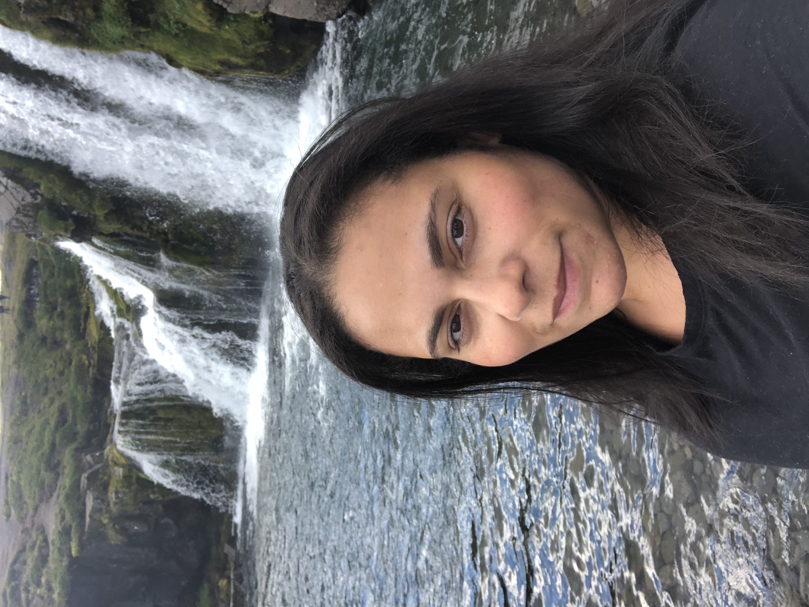

Jenna Rysanek

Summary
I am an adaptable, action-oriented software engineer that leverages my education and extensive background in photography and customer service to bring a creative, client-centered perspective to my work.
Education
- General Assembly, Certification of Completion, Software Engineering
- University of Central Florida, Bachelor of Science in Photography
- Southeast Center of Photographic Studies, Associate of Science in Photographic Studies
Work Experience
- Medical Care Worker - Innovative Resources for Independence
- September 2021 to Current
- Provided care as part of a 3+ person team for 7+ individuals with mental and physical disabilities in a group setting for a non-profit.
- Organized appointments and medicinal administrations for individuals.
- Collaborated with other Medical Care Workers, nurses and staff to ensure individuals were accounted for.
- Software Engineering Fellow - General Assembly
- March 2020 to July 2020
- Developed a React based application that utilizes an API through Axios.
- Designed a responsive web application that generates a random inspirational quote using vanilla JavaScript, DOM manipulation and a third-party API through Axios.
- Built a full stack application with a React front-end and Ruby on Rails backend.
- Medical Consuelor - Life's Worc
- December 2016 to June 2019
- Provided care as part of a 3+ person team for 10+ individuals with mental and physical disabilities in a group setting for a non-profit.
- Organized appointments and medicinal administrations for individuals.
- Collaborated with other Medical Counselors and staff to ensure individuals were accounted for.
- Sales Associate - Lane Bryant
- January 2016 to May 2017
- Worked with numerous clients and team members to obtain desired fashion and accessories, while delivering exceptional customer service.
- Processed, ordered and organized inbound/outbound customer orders.
- Maintained stock or inventory of 10,000+ units of clothing.
- Photographer - Babyface Portraits
- June 2013 to May 2015
- Specialized in providing portraits of newborns and families in 3+ hospitals.
- Designed and created multiple outfits and backgrounds to perfectly fit the image and personality of each client.
- Exceeded expectations by providing needed team support, great customer service and following through, always meeting deadlines.
- Maximized the output of high-level photographs, by inspecting proofs and completing required retouching.
- Adjust, modify, and rework photos using digital and computer manipulation applications.
Skills
Technical
HTML, CSS, JavaScript, React, API, JSON, Axios, DOM Manipulation, GIT, Ruby, Rails, Mongoose, MongoDB
Design
Adobe Bridge, Adobe Photoshop, Adobe XD, Figma, Lightroom, FinalCut Pro, Imovie, Adobe Premier Pro, Google Suite
Other
My Hobbies
Contact Me